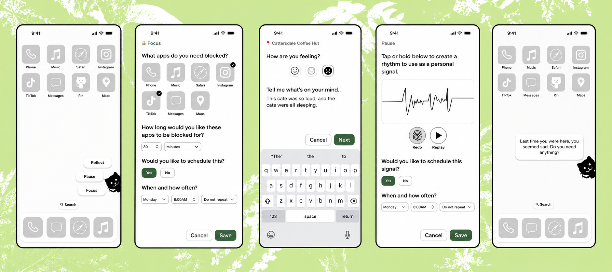
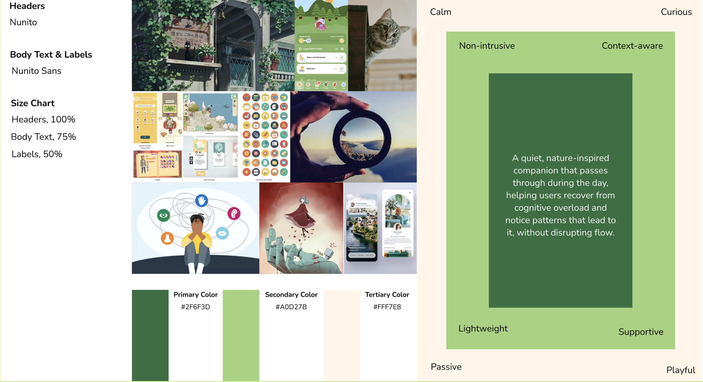
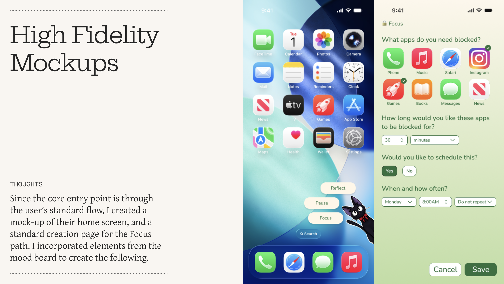

Rin: A Gentle Reset
An invitation-based mobile companion for moments of cognitive overload — one that offers a small, optional reset instead of asking for another task.

Conventional wellness tools ask you to stop, open another app, read a dashboard, and finish a structured activity. That effort makes the tool least approachable exactly when you have the least capacity to use it.
Rin is a passive but interactive companion that appears in the user's existing device flow and offers three optional actions — Focus, Reflect, and Pause — rather than forcing an interruption.
Explores whether an intervention can stay lightweight, contextual, and voluntary while still creating a meaningful break in automatic behavior.
This was an exploratory prototype, not a clinically validated mental-health product. Its role is to support self-awareness and attention management — not to diagnose, prevent, or treat a medical condition.
A companion at the edge of the screen
Rin occasionally appears at the edge of the screen and invites the user to choose a calming activity, reduce distracting stimuli, or briefly acknowledge their current state. The interaction is intentionally peripheral: Rin does not take over the device, open automatically into a long workflow, or require a response.
Widget-based interaction
Rin enters through the user's existing mobile environment rather than requiring them to remember to open a dedicated wellness app. The companion and its actions live on the home screen, shortening the distance between noticing stress and taking a small action.
Invitation-based nudges
Every interaction is optional. Rin can suggest a pause, but the user decides whether to engage — an aggressive notification or forced intervention would become another source of cognitive demand.
Modular interaction modes
The system is divided into small, independent features. A user can rely on one mode, combine several, or ignore the assistant entirely. Nothing requires completing a broader program before it provides value.
Moments requiring you to push through
The project focused on busy locations, demanding situations, and periods when mental energy has already been spent — the moments when people keep operating out of habit even though concentration, patience, and capacity for new stimuli have dropped.
- Moving between several meetings or classes
- Trying to work after a mentally demanding task
- Entering a loud or crowded environment
- Returning to a location associated with previous stress
- Repeatedly opening distracting apps without a clear intention
- Feeling overwhelmed but lacking energy for a lengthy wellness exercise
The design opportunity was not to eliminate every difficult moment. It was to create a small reset point before the user continued automatically.
…help people notice and respond to cognitive or sensory overload without adding another disruptive task to an already demanding moment?
Three patterns, one constraint
Each pattern answers a need with a bounded design response — and each is chosen because the conventional alternative asks too much of someone who is already depleted.
Surface possible overload, anticipatory stress, or repetitive behavior before the user continues without reflection.
Rin appears within the existing flow with a small number of clearly labeled options — visible enough to create awareness, but never blocking the user from continuing.
Most attention tools depend on the user recognizing a problem and opening the right app. Rin tests whether a lightweight signal can create that recognition instead.
Provide a clear place to pause, evaluate the situation, and restart with greater intention.
Each mode offers a bounded action rather than an open-ended wellness task: choose apps to block, record a short reflection, or create and replay a haptic signal.
When someone is overloaded, a broad request like "take care of yourself" is too ambiguous. A specific action reduces the planning and interpretation required.
Let users acknowledge how they feel without turning the interaction into a demanding journaling exercise.
Reflect combines a simple emotional selection with an optional short note, which can be associated with a place and surfaced again on return.
The goal isn't detailed emotional analysis. It's helping someone recognize a recurring relationship between a context and their response to it.
Optional
The user retains control over whether and when to participate.
Lightweight
A meaningful interaction is possible with only a few actions.
Context-aware
The intervention relates to time, location, scheduled activity, or a user-defined pattern.
Private
Sensitive reflections and haptic signals stay personal, never public by default.
Nonjudgmental
Distraction, stress, and avoidance are never framed as failure.
Predictable
Users understand why Rin appeared and how to disable, reschedule, or change its behavior.
Three modes, three kinds of reset
The low-fidelity prototype explored a widget-driven experience guiding the user toward three primary actions. (hover a mode ↓)
Focus
Temporarily block selected apps: choose which, for how long, whether to schedule it, when it begins, and whether it repeats.
Reflect
Acknowledge how a place felt — a location reference, a small emotional scale, an optional note, surfaced again on a later visit.
Pause
Create a haptic rhythm by tapping or holding. Replay it, re-record it, save it, schedule it — a discreet cue needing no eyes or ears.
The interaction targets a specific period rather than permanent restriction — a temporary support for an immediate intention, not a punitive device-control system.
People repeatedly encounter stressful environments without recognizing the pattern — but location-based reflection also introduces privacy and consent concerns that would require careful testing and transparent controls.
Visual prompts and audio exercises may be impractical in public or socially sensitive environments. A haptic pattern stays private and available without asking the user to look at the screen.
A quiet companion, not a clinical monitor
The mood board combined natural imagery, soft interfaces, playful game-like systems, and a companion character — chosen to reduce the institutional feeling so often attached to wellness products.
Typography paired expressive headings with straightforward interface text. The character and natural palette were both intended to soften the clinical register.
A companion makes an optional prompt feel less like a system warning and more like a suggestion.
A character can become distracting, childish, or emotionally manipulative. The right amount of animation, personality, and persistence would have to be established through testing.

The home screen is part of the product
Because the concept begins inside the user's normal mobile environment, the home screen was treated as part of the experience rather than merely a route into the application.
Home-screen entry
Rin appears at the lower edge of the home screen with three actions — Reflect, Pause, and Focus. The menu is visually separate from the app grid but stays small enough not to take over the interface.
- Rin remains peripheral until expanded
- The user can dismiss the menu
- Actions use plain language, not wellness terminology
- No emotional state is assumed from behavior alone
Focus configuration
The high-fidelity Focus screen preserves the low-fidelity workflow, applying the softer green palette from the mood board while retaining familiar mobile controls.
- Select applications
- Choose a duration
- Decide whether to schedule the session
- Set a time and recurrence
- Cancel or save
The product does not invent an unfamiliar interaction model. App icons, selection indicators, dropdowns, and clear save and cancel actions reduce the new interface behavior a depleted user must learn.
Proposed criteria, not observed results
The project documents the evolution from concept to low- and high-fidelity screens, but it does not include a formal usability study. What follows should be read as an evaluation plan.
Discoverability
Do users notice Rin without feeling it obstructs the home screen?
Interpretation
Do users understand the difference between Focus, Reflect, and Pause?
Cognitive burden
Can each activity be completed during a period of reduced attention?
Control
Do users understand how to dismiss, disable, schedule, or modify Rin?
Trust
Are users comfortable with location-based reflections and app-blocking permissions?
Haptic comprehension
Can users create, recognize, and reuse a haptic pattern without visual guidance?
Tone
Does the companion feel supportive — or patronizing and intrusive?
- Set a 30-minute Focus session that blocks two distracting applications
- Schedule that session for a later time
- Record a reflection about a noisy location
- Locate and understand the saved reflection
- Create and replay a personal haptic rhythm
- Disable future prompts from Rin
- Explain why Rin appeared
Three related forms of reset
The final prototype presents Rin as a small, modular layer within the mobile operating environment — organized around reducing external demand, recognizing internal state, and introducing a private signal.
Reduce external demand
Temporarily limits selected sources of distraction.
Recognize internal state
Creates a simple record of how a place or situation felt.
Introduce a private signal
Uses a user-created haptic pattern as a discreet grounding cue.
Notice that continuing automatically may not be helpful.
Choose the smallest appropriate intervention.
Complete a bounded activity.
Return to the original task.
The application is not designed to keep the user engaged. Its success would depend on helping the user leave the product and continue more intentionally.

What the prototype deliberately does not do
- Clinical diagnosis — no inferring or labeling of anxiety, depression, ADHD, or sensory-processing conditions.
- Mandatory intervention — no activity is required before accessing the device.
- Public social features — no feeds, rankings, or accountability systems.
- Continuous biometric monitoring — no heart-rate, sleep, or physiological data.
- Gamified wellness streaks — no scores or penalties that turn recovery into another performance obligation.
Notification fatigue
Even a gentle companion may become irritating if it appears too often.
Incorrect context
Location or schedule data may cause Rin to intervene at an inappropriate moment.
Privacy
Location-linked reflections could expose sensitive behavioral patterns.
Overrestriction
App blocking could interfere with legitimate communication or emergency access.
Character dependency
A personalized companion may encourage attachment or reduce the perceived seriousness of distress.
Unsupported expectations
Users could read the app as a substitute for professional support unless its limits are stated clearly.
The tension at the center
Rin began as an exploration of how an application might support people during cognitive overload without becoming another source of overload. The strongest part of the concept is its focus on small, bounded interactions inside the user's existing flow — meeting people at the point where distraction or strain is already happening, rather than asking them to enter a separate wellness environment.
The central design tension is equally clear: an intervention meant to reduce burden can easily become an interruption. Rin would only succeed if users kept meaningful control over its timing, frequency, appearance, and access to contextual data.
A wellness tool doesn't need to demand sustained engagement to provide value. Sometimes the more appropriate goal is to help someone pause briefly, make one intentional choice, and then leave.
HCDE 536 A · INTERACTIVE MOBILE PROTOTYPE
CONCEPT · INTERACTION DESIGN · VISUAL DIRECTION · PROTOTYPING